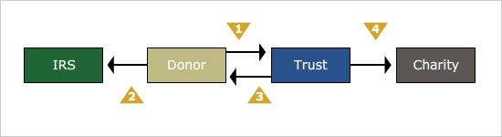

Charitable Remainder Trusts
The preceding scenario illustrates what is called a charitable remainder trust. Charitable remainder trusts can be created during one's lifetime or upon death through one's will. In this course, we will focus on those created during life.
Here is how a charitable remainder trust works:
The IRS has issued sample trusts that serve to guide attorneys in drafting charitable remainder trusts that will qualify for the income tax charitable deduction. These trusts are characterized by the following:
The trust can provide income for one or more beneficiaries. Generally, only the grantor or the grantor and his/her spouse are named as the income beneficiaries, so as to avoid transfer tax issues associated with naming anyone else, but other beneficiaries are possible.
The trust can be written to terminate upon the death of the income beneficiary or upon their combined deaths if more than one. Alternatively, the trust can be written to terminate at the end of a specific number of years, not to exceed 20 years; or it can be written to run until the death of the income beneficiaries with a term certain of up to 20 years.
While the trust is irrevocable, the charitable beneficiary designation can be changed without losing the tax advantages of the trust.
The annual payout to the income beneficiary(ies) cannot be less than 5% or more than 50% of the value of the trust. This amount must be paid at least annually to the noncharitable income beneficiary out of the income and/or principal of the trust.
Click each
to learn more.

1. While the donor can technically fund the trust with any type of property, it is generally not advisable to use property that has declined in value from its purchase price, as such assets will be valued at their current market value and the possibility of using the loss to offset income taxes will be lost. Generally speaking, appreciated property should be given first priority. This is because no capital gain taxes are payable when the property is donated. If the trust later sells the asset, again there are no capital gain taxes. Only if the capital gain gets paid out to the income beneficiary would the beneficiary be subject to the tax.
Note that the remainder interest must have an actuarial value that is at least 10% of the initial value of the property contributed to the trust. Anything less will prevent the trust from qualifying as a charitable remainder trust.
2. The donor gets an immediate Federal income tax deduction. The tables that are used to calculate the amount that may be deducted will take into account the number of years before termination of the trust and distributions of income to the donor. If the trust is for the lifetime of the income beneficiary(ies), the tables will also take into consideration life expectancy.
3. When the income beneficiary receives the required distributions, the income taxes assessed to that distribution are determined using a tiering methodology. This income is paid out and taxed on a four tier system, in order:
1. Ordinary income
2. Capital gain income
3. Tax-exempt income
4. Tax-free distributions of principal
Income at the trust level is allocated for accounting purposes to the appropriate tier. The taxation of each distribution is determined by first applying the Tier 1 accounting allocation until exhausted, then tier 2 until exhausted, and so on. For example, suppose a trust must make a distribution to the beneficiary of $6,000 and has accumulated income as follows:
Tier 1: Ordinary income: $5,000
Tier 2: Capital gain income: $3,000
Tier 3: Tax-exempt income: $1,000
When the distribution is made, it would be made up of $5,000 of ordinary income and $1,000 of capital gain income. If, however, the distribution had been for $10,000, then the distribution would include $5,000 of ordinary income, $3,000 of capital gain income, $1,000 of tax-exempt income, and $1,000 of principal.
Keep in mind that the trust assumes the donor's cost basis in the property/asset contributed. Thus, if the contributed property is subsequently sold by the trust, the income realized as a result of the sale is allocated to the appropriate tier to be applied against future distributions. Though any gain on the contributed property is avoided by the grantor, it is likely to be in turn taxed to the income beneficiary as distributions are received. Thus, if the grantor is also a beneficiary, the gain may not be ultimately avoided.
4. Upon termination, the charity receives the corpus of the trust. This amount may be more or less than was originally contributed, depending upon investment performance and the degree to which income was allowed to accumulate and principal was not encroached.